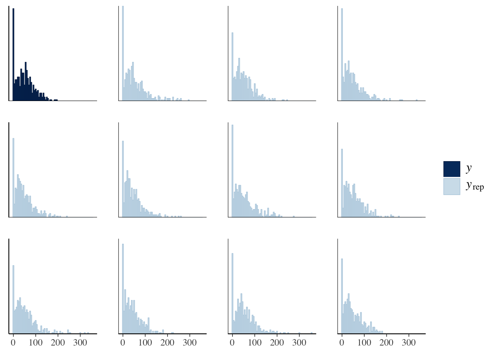
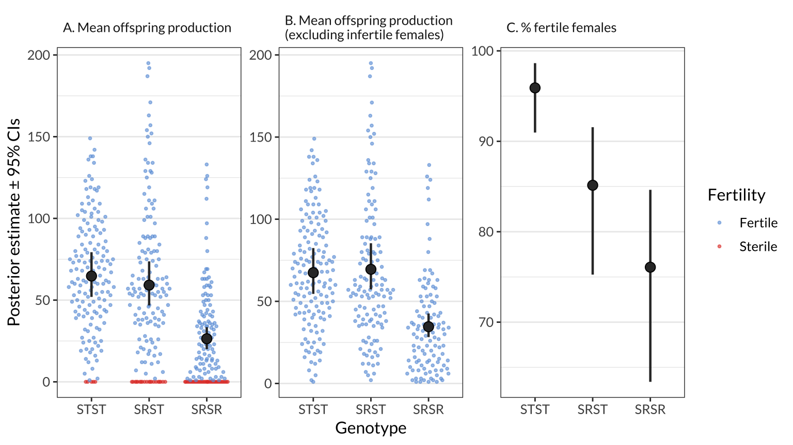
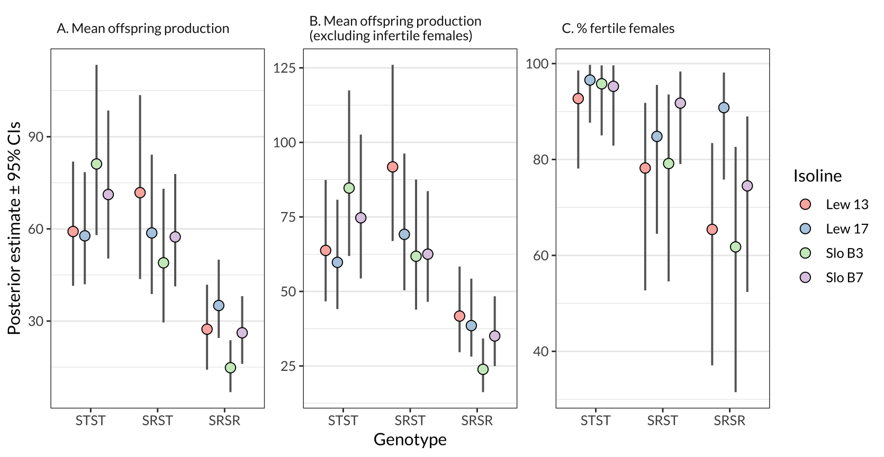
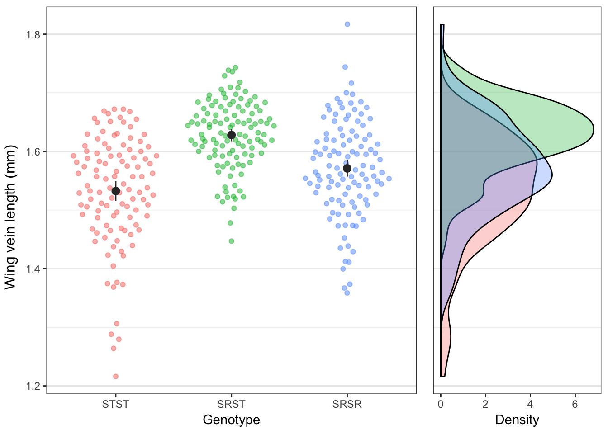
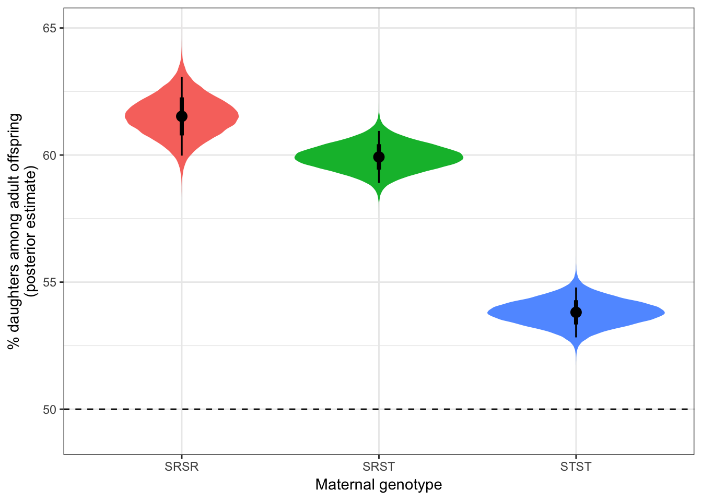
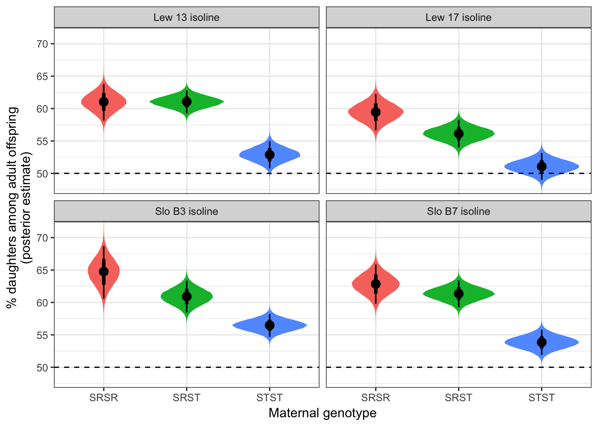

Last updated: 2019-11-05
Checks: 7 0
Knit directory: cost_of_SR_Dpseudo/
This reproducible R Markdown analysis was created with workflowr (version 1.4.0). The Checks tab describes the reproducibility checks that were applied when the results were created. The Past versions tab lists the development history.
Great! Since the R Markdown file has been committed to the Git repository, you know the exact version of the code that produced these results.
Great job! The global environment was empty. Objects defined in the global environment can affect the analysis in your R Markdown file in unknown ways. For reproduciblity it’s best to always run the code in an empty environment.
The command set.seed(20190319) was run prior to running the code in the R Markdown file. Setting a seed ensures that any results that rely on randomness, e.g. subsampling or permutations, are reproducible.
Great job! Recording the operating system, R version, and package versions is critical for reproducibility.
Nice! There were no cached chunks for this analysis, so you can be confident that you successfully produced the results during this run.
Great job! Using relative paths to the files within your workflowr project makes it easier to run your code on other machines.
Great! You are using Git for version control. Tracking code development and connecting the code version to the results is critical for reproducibility. The version displayed above was the version of the Git repository at the time these results were generated.
Note that you need to be careful to ensure that all relevant files for the analysis have been committed to Git prior to generating the results (you can use wflow_publish or wflow_git_commit). workflowr only checks the R Markdown file, but you know if there are other scripts or data files that it depends on. Below is the status of the Git repository when the results were generated:
Ignored files:
Ignored: .DS_Store
Ignored: .Rhistory
Ignored: .Rproj.user/
Ignored: output/.DS_Store
Unstaged changes:
Modified: figures/figure_3.pdf
Modified: figures/figure_4.pdf
Note that any generated files, e.g. HTML, png, CSS, etc., are not included in this status report because it is ok for generated content to have uncommitted changes.
These are the previous versions of the R Markdown and HTML files. If you’ve configured a remote Git repository (see ?wflow_git_remote), click on the hyperlinks in the table below to view them.
| File | Version | Author | Date | Message |
|---|---|---|---|---|
| Rmd | 4791cd5 | lukeholman | 2019-11-05 | after review |
| html | 4791cd5 | lukeholman | 2019-11-05 | after review |
| html | a0fac3a | lukeholman | 2019-08-14 | Build site. |
| Rmd | dd8c525 | lukeholman | 2019-08-14 | tweak table 1 |
| html | cc9b832 | lukeholman | 2019-08-14 | Build site. |
| Rmd | 20ca271 | lukeholman | 2019-08-14 | working nicely |
| html | 2f42981 | lukeholman | 2019-08-14 | Build site. |
| Rmd | e5f7926 | lukeholman | 2019-08-14 | working nicely |
| html | e5f7926 | lukeholman | 2019-08-14 | working nicely |
| html | 24d4c9c | lukeholman | 2019-07-02 | Build site. |
| Rmd | 0479dbb | lukeholman | 2019-07-02 | re-run model |
| html | 13a5603 | lukeholman | 2019-07-02 | Build site. |
| Rmd | 2ef4d13 | lukeholman | 2019-07-02 | re-run model |
| html | 52ea758 | lukeholman | 2019-06-28 | Build site. |
| Rmd | 44d4565 | lukeholman | 2019-06-28 | First complete commit |
| html | e2cfeac | lukeholman | 2019-06-28 | Build site. |
| Rmd | fc7812e | lukeholman | 2019-06-28 | First complete commit |
| html | 93aec6e | lukeholman | 2019-06-28 | Build site. |
| Rmd | 01d7dbb | lukeholman | 2019-06-28 | First complete commit |
| html | 8c6e0c3 | lukeholman | 2019-06-28 | Build site. |
| Rmd | ffdc5d4 | lukeholman | 2019-06-28 | First complete commit |
| html | ffdc5d4 | lukeholman | 2019-06-28 | First complete commit |
library(tidyverse)
library(brms)
library(bayestestR)
library(kableExtra)
library(ggbeeswarm)
library(RColorBrewer)
library(showtext)
library(lme4)
library(lmerTest)
library(gridExtra)
library(tidybayes)
font_add_google(name = "Lato", family = "Lato", regular.wt = 400, bold.wt = 700)
showtext_auto()
options(stringsAsFactors = FALSE)
SE <- function(x) sd(x) / sqrt(length(x))
get_fixed_effects_with_p_values <- function(brms_model){
fixed_effects <- data.frame(summary(brms_model)$fixed) %>%
rownames_to_column("Parameter")
fixed_effects$p <- (100 - as.data.frame(bayestestR::p_direction(brms_model))$pd) / 100
fixed_effects %>% select(Parameter, everything()) %>%
rename(`l-95% CI` = l.95..CI, `u-95% CI` = u.95..CI) %>%
mutate(` ` = ifelse(p < 0.05, "\\*", " "))
}fitness_data <- read_csv("data/SR_fitness_data.csv") %>%
filter(!is.na(genotype)) %>%
rename(body_size = `Body size`,
female_age = `F age`) %>%
mutate(genotype = factor(genotype, levels = c("STST", "SRST", "SRSR")))
sex_ratio_data <- read.csv("data/SR_sex_ratio_data.csv", stringsAsFactors = FALSE)
sex_ratio_data$n <- with(sex_ratio_data, male + female)Here, we calculate the mean offspring produced by females from each of the three genotypes (STST, SRST, and SRSR), either within each isoline or across all the isolines. We also calculate the % females that failed to produce any offspring, and provide sample size information.
means_by_isoline <- fitness_data %>%
group_by(genotype, Isoline) %>%
summarise(
Number_of_females_measured = n(),
Mean_offspring_per_female = mean(offspring),
SE = SE(offspring),
n_females_producing_offspring = sum(offspring != 0),
Percent_females_producing_offspring = 100 * n_females_producing_offspring / n())
means <- fitness_data %>%
mutate(Isoline = "Across all isolines") %>%
group_by(genotype, Isoline) %>%
summarise(
Number_of_females_measured = n(),
Mean_offspring_per_female = mean(offspring),
SE = SE(offspring),
n_females_producing_offspring = sum(offspring != 0),
Percent_females_producing_offspring = 100 * n_females_producing_offspring / n())
sample_size_table <- bind_rows(means_by_isoline, means) %>%
rename_all(function(x) gsub("_", " ", x)) %>%
rename_all(function(x) gsub("Percent", "%", x)) %>%
rename(Genotype = genotype)
for_export <- sample_size_table
names(for_export) <- c("Genotype", "Isoline", "n females",
"Mean productivity", "SE", "n productive", "% productive")
for_export %>% write_rds("output/sample_size_table.rds")
sample_size_table %>%
kable(digits = 2) %>% kable_styling()| Genotype | Isoline | Number of females measured | Mean offspring per female | SE | n females producing offspring | % females producing offspring |
|---|---|---|---|---|---|---|
| STST | Lew 13 | 37 | 57.81 | 6.46 | 35 | 94.59 |
| STST | Lew 17 | 40 | 56.85 | 5.04 | 39 | 97.50 |
| STST | Slo B3 | 40 | 76.67 | 5.59 | 39 | 97.50 |
| STST | Slo B7 | 35 | 71.14 | 4.71 | 34 | 97.14 |
| SRST | Lew 13 | 39 | 72.82 | 8.70 | 32 | 82.05 |
| SRST | Lew 17 | 37 | 56.24 | 8.11 | 32 | 86.49 |
| SRST | Slo B3 | 31 | 49.10 | 5.20 | 26 | 83.87 |
| SRST | Slo B7 | 39 | 55.26 | 7.07 | 36 | 92.31 |
| SRSR | Lew 13 | 36 | 28.58 | 5.92 | 25 | 69.44 |
| SRSR | Lew 17 | 37 | 32.19 | 3.91 | 34 | 91.89 |
| SRSR | Slo B3 | 31 | 17.19 | 4.56 | 22 | 70.97 |
| SRSR | Slo B7 | 38 | 25.50 | 4.76 | 28 | 73.68 |
| STST | Across all isolines | 152 | 65.59 | 2.81 | 147 | 96.71 |
| SRST | Across all isolines | 146 | 58.89 | 3.83 | 126 | 86.30 |
| SRSR | Across all isolines | 142 | 26.21 | 2.45 | 109 | 76.76 |
The model assumes that the response variable, offspring number, is the result of a ‘hurdle’ process. Essentially this means that the model consists of two sub-models: one controlling the probability that offspring number is non-zero, and one controlling the number of offspring produced provided that more than zero are produced (we assume that offspring number follows a negative binomial distribution, because this improved model fit relative to the simpler hurdle-Poisson model).
We assume that the parameters controlling both the hurdle and the distribution of non-zero values are affected by four fixed effects (the female’s genotype: STST, SRST, or SRSR), her isoline, the female’s age, and the interaction between genotype and isoline. We also fit two random effects: isoline, and experimental block. All fixed effects were assumed to have a prior distribution following a normal distribution with mean 0 and SD = 5.
if(!file.exists("output/brms_model.rds")){
# The hurdle and the mean have the same set of predictors
model_formula <- bf(
offspring ~ genotype * Isoline + female_age + (1 | Block),
hu ~ genotype * Isoline + female_age + (1 | Block)
)
model_formula2 <- bf(
offspring ~ genotype + Isoline + female_age + (1 | Block),
hu ~ genotype + Isoline + female_age + (1 | Block)
)
model_formula3 <- bf(
offspring ~ genotype + female_age + (1 | Block),
hu ~ genotype + female_age + (1 | Block)
)
# This model added in response to a reviewer request.
# I don't think this model is much use here, since body size is a mediator variable;
# see the diagram at the top of this page: https://en.wikipedia.org/wiki/Mediation_(statistics)
# Moreover, many females have no body size measurement, so the sample size is smaller
body_size_model <- bf(
offspring ~ genotype + female_age + body_size + (1 | Block),
hu ~ genotype + female_age + body_size + (1 | Block)
)
# Find R^2 for a brms model, and its 95% CIs, and present neatly
neat_R2 <- function(model){
R2 <- bayes_R2(model) %>% round(2)
paste(R2[1,1], " (95% CIs = ", R2[1,3], "-", R2[1,4], ")", sep = "")
}
# We set conservative, "regularising" priors - see McElreath's "Statistical Rethinking" textbook
model_prior <- c(set_prior("normal(0, 3)", class = "b"),
set_prior("normal(0, 3)", class = "b", dpar = "hu"))
full_model <- brm(model_formula,
family = "hurdle_negbinomial",
chains = 4, cores = 1, iter = 40000, inits = 0, seed = 12345,
control = list(adapt_delta = 0.9999, max_treedepth = 15),
save_all_pars = TRUE,
prior = model_prior,
data = fitness_data)
no_interaction <- brm(model_formula2,
family = "hurdle_negbinomial",
chains = 4, cores = 1, iter = 40000, inits = 0, seed = 12345,
control = list(adapt_delta = 0.9999, max_treedepth = 15),
save_all_pars = TRUE,
prior = model_prior,
data = fitness_data)
genotype_only_model <- brm(model_formula3,
family = "hurdle_negbinomial",
chains = 4, cores = 1, iter = 40000, inits = 0, seed = 12345,
control = list(adapt_delta = 0.9999, max_treedepth = 15),
save_all_pars = TRUE,
prior = model_prior,
data = fitness_data)
# Added after peer review:
body_size_model <- brm(body_size_model,
family = "hurdle_negbinomial",
chains = 4, cores = 1, iter = 40000, inits = 0, seed = 12345,
control = list(adapt_delta = 0.9999, max_treedepth = 15),
save_all_pars = TRUE,
prior = model_prior,
data = fitness_data)
saveRDS(post_prob(full_model, no_interaction, genotype_only_model),
file = "output/model_comparison.rds")
saveRDS(full_model, file = "output/full_model.rds")
saveRDS(genotype_only_model, file = "output/genotype_only_model.rds")
saveRDS(body_size_model, file = "output/body_size_model.rds")
saveRDS(neat_R2(full_model), file = "output/R2_of_full_model.rds")
saveRDS(neat_R2(genotype_only_model), file = "output/R2_of_genotype_only_model.rds")
saveRDS(neat_R2(body_size_model), file = "output/R2_of_body_size_model.rds")
} else{
full_model <- readRDS("output/full_model.rds")
genotype_only_model <- readRDS("output/genotype_only_model.rds")
model_probabilities <- readRDS("output/model_comparison.rds")
body_size_model <- readRDS("output/body_size_model.rds")
}The idea behind posterior predictive checking is that if our model is a good fit, then we should be able to use it to generate a dataset which looks a lot like the dataset we actually observed. Here, we see 11 draws from the ‘posterior predictive distribution’ (pale blue), which indeed look quite similar to the distribution of the real data (dark blue), suggesting that our model is a good enough approximation of the true data-generating process for reliable inference.
pp_check(genotype_only_model, type = "hist", nsamples = 11, binwidth = 5)
make_model_table <- function(model){ # helper function for the 3 tables here
random <- as.data.frame(summary(model)$random[[1]]) %>%
rownames_to_column("Parameter") %>%
mutate(p = NA,
Parameter = c("sd(Block - Intercept)", "sd(Block - Hurdle intercept)"),
` ` = "")
rbind(get_fixed_effects_with_p_values(model), random) %>%
mutate(Parameter = gsub("hu_", "Hurdle - ", Parameter),
Estimate = format(round(Estimate, 3), nsmall = 3),
Est.Error = format(round(Est.Error, 3), nsmall = 3),
` ` = ifelse(p < 0.05, "*", ""),
` ` = replace(` `, is.na(` `), ""),
p = format(round(p, 4), nsmall = 4),
Rhat = format(round(Rhat, 3), nsmall = 3),
`l-95% CI` = format(round(`l-95% CI`, 3), nsmall = 3),
`u-95% CI` = format(round(`u-95% CI`, 3), nsmall = 3),
Bulk_ESS = round(Bulk_ESS, 0),
Tail_ESS = round(Tail_ESS, 0)
)
}This model contains the fixed factor genotype, and the random effect block.
The response variable (number of progeny) was treated as a hurdle process, i.e. the model estimates the parameters for the probability of producing at least some progeny (the ‘Hurdle’ parameters), and the number of progeny produced assuming that at least some are (other parameters).
no_isoline_model_table <- make_model_table(genotype_only_model)
saveRDS(no_isoline_model_table, "output/no_isoline_model_table.rds")
no_isoline_model_table %>%
kable() %>% kable_styling()| Parameter | Estimate | Est.Error | l-95% CI | u-95% CI | Rhat | Bulk_ESS | Tail_ESS | p | |
|---|---|---|---|---|---|---|---|---|---|
| Intercept | 4.244 | 0.236 | 3.782 | 4.705 | 1.000 | 76247 | 51126 | 0.0000 |
|
| Hurdle - Intercept | -2.304 | 0.940 | -4.180 | -0.486 | 1.000 | 79331 | 56507 | 0.0067 |
|
| genotypeSRST | 0.030 | 0.089 | -0.143 | 0.206 | 1.000 | 74772 | 62501 | 0.3693 | |
| genotypeSRSR | -0.669 | 0.094 | -0.851 | -0.482 | 1.000 | 77722 | 61179 | 0.0000 |
|
| female_age | -0.010 | 0.053 | -0.113 | 0.095 | 1.000 | 105585 | 57494 | 0.4280 | |
| Hurdle - genotypeSRST | 1.488 | 0.505 | 0.542 | 2.533 | 1.000 | 57326 | 49312 | 0.0007 |
|
| Hurdle - genotypeSRSR | 2.093 | 0.489 | 1.191 | 3.113 | 1.000 | 55547 | 49201 | 0.0000 |
|
| Hurdle - female_age | -0.240 | 0.210 | -0.651 | 0.170 | 1.000 | 101961 | 57083 | 0.1257 | |
| sd(Block - Intercept) | 0.137 | 0.125 | 0.006 | 0.453 | 1.000 | 17685 | 32248 | NA | |
| sd(Block - Hurdle intercept) | 0.328 | 0.344 | 0.011 | 1.176 | 1.000 | 25228 | 33771 | NA |
This model contains the fixed factor genotype, the fixed factor isoline, and their interaction, as well as the random effect block.
The response variable (number of progeny) was treated as a hurdle process, i.e. the model estimates the parameters for the probability of producing at least some progeny (the ‘Hurdle’ parameters), and the number of progeny produced assuming that at least some are (other parameters).
full_model_table <- make_model_table(genotype_only_model)
saveRDS(full_model_table, "output/full_model_table.rds")
full_model_table %>%
kable() %>% kable_styling()| Parameter | Estimate | Est.Error | l-95% CI | u-95% CI | Rhat | Bulk_ESS | Tail_ESS | p | |
|---|---|---|---|---|---|---|---|---|---|
| Intercept | 4.244 | 0.236 | 3.782 | 4.705 | 1.000 | 76247 | 51126 | 0.0000 |
|
| Hurdle - Intercept | -2.304 | 0.940 | -4.180 | -0.486 | 1.000 | 79331 | 56507 | 0.0067 |
|
| genotypeSRST | 0.030 | 0.089 | -0.143 | 0.206 | 1.000 | 74772 | 62501 | 0.3693 | |
| genotypeSRSR | -0.669 | 0.094 | -0.851 | -0.482 | 1.000 | 77722 | 61179 | 0.0000 |
|
| female_age | -0.010 | 0.053 | -0.113 | 0.095 | 1.000 | 105585 | 57494 | 0.4280 | |
| Hurdle - genotypeSRST | 1.488 | 0.505 | 0.542 | 2.533 | 1.000 | 57326 | 49312 | 0.0007 |
|
| Hurdle - genotypeSRSR | 2.093 | 0.489 | 1.191 | 3.113 | 1.000 | 55547 | 49201 | 0.0000 |
|
| Hurdle - female_age | -0.240 | 0.210 | -0.651 | 0.170 | 1.000 | 101961 | 57083 | 0.1257 | |
| sd(Block - Intercept) | 0.137 | 0.125 | 0.006 | 0.453 | 1.000 | 17685 | 32248 | NA | |
| sd(Block - Hurdle intercept) | 0.328 | 0.344 | 0.011 | 1.176 | 1.000 | 25228 | 33771 | NA |
This is the same as the top model (i.e. the Genotype-only model), except that it also includes body size a predictor in both components of the hurdle model. Note also that this analysis is restricted to females for which a body size measurement was available, reducing the sample size from 440 to 338 females.
bodysize_model_table <- make_model_table(body_size_model)
saveRDS(bodysize_model_table, "output/bodysize_model_table.rds")
bodysize_model_table %>%
kable() %>% kable_styling()| Parameter | Estimate | Est.Error | l-95% CI | u-95% CI | Rhat | Bulk_ESS | Tail_ESS | p | |
|---|---|---|---|---|---|---|---|---|---|
| Intercept | 2.501 | 0.841 | 0.860 | 4.172 | 1.000 | 78603 | 61911 | 0.0014 |
|
| Hurdle - Intercept | -0.813 | 2.746 | -6.253 | 4.498 | 1.000 | 97985 | 61318 | 0.3853 | |
| genotypeSRST | 0.046 | 0.118 | -0.184 | 0.280 | 1.000 | 54937 | 56365 | 0.3480 | |
| genotypeSRSR | -0.623 | 0.113 | -0.842 | -0.400 | 1.000 | 62405 | 59369 | 0.0000 |
|
| female_age | -0.004 | 0.065 | -0.131 | 0.123 | 1.000 | 89886 | 60265 | 0.4763 | |
| body_size | 1.072 | 0.539 | 0.005 | 2.124 | 1.000 | 72909 | 61737 | 0.0246 |
|
| Hurdle - genotypeSRST | 1.577 | 0.579 | 0.503 | 2.767 | 1.000 | 51814 | 50939 | 0.0018 |
|
| Hurdle - genotypeSRSR | 2.338 | 0.534 | 1.350 | 3.458 | 1.000 | 52524 | 47783 | 0.0000 |
|
| Hurdle - female_age | -0.378 | 0.228 | -0.827 | 0.065 | 1.000 | 91787 | 58967 | 0.0478 |
|
| Hurdle - body_size | -0.594 | 1.708 | -3.916 | 2.789 | 1.000 | 88482 | 60276 | 0.3627 | |
| sd(Block - Intercept) | 0.153 | 0.133 | 0.008 | 0.477 | 1.000 | 18485 | 26949 | NA | |
| sd(Block - Hurdle intercept) | 0.319 | 0.306 | 0.011 | 1.108 | 1.000 | 28166 | 39262 | NA |
Here, we estimate the mean for three measures of female fitness using the model, for each genotype (across all isolines) and for each genotype-isoline combination. The model adjusts for variation due to experimental block and female age.
make_figure_data <- function(by_isoline = FALSE){
if(by_isoline){
new <- fitness_data %>%
select(genotype, Isoline, body_size, female_age) %>%
mutate(body_size = mean(body_size, na.rm = TRUE),
female_age = mean(female_age)) %>%
distinct()
model <- full_model
col_names <- paste(new$genotype, new$Isoline, sep = "~")
} else {
new <- fitness_data %>%
select(genotype, body_size, female_age) %>%
mutate(body_size = mean(body_size, na.rm = TRUE),
female_age = mean(female_age)) %>%
distinct()
model <- genotype_only_model
col_names <- new$genotype
}
# Summarise the posterior (dots and CIs in Figure 1 or S1)
predicted_mean <- data.frame(new, fitted(model, newdata = new, re_formula = NA)) %>%
mutate(facet = "A. Mean offspring production")
predicted_mean_when_fertile <- data.frame(new, fitted(model, newdata = new, dpar = "mu", re_formula = NA)) %>%
mutate(facet = "B. Mean offspring production\n(excluding infertile females)")
predicted_prop_fertile <- data.frame(new, fitted(model, newdata = new, dpar = "hu", re_formula = NA)) %>%
mutate(facet = "C. % fertile females",
Estimate = 100 * (1 - Estimate), # Convert to percentage of fertile females, instead of *proportion* that are *in*fertile
Q2.5 = (1 - Q2.5) * 100,
Q97.5 = (1 - Q97.5) * 100)
summary_df <- bind_rows(predicted_mean,
predicted_mean_when_fertile,
predicted_prop_fertile) %>%
mutate(genotype = factor(genotype, levels = c("STST", "SRST", "SRSR")))
if(!by_isoline) summary_df <- summary_df %>% mutate(Isoline = "All isolines")
# Posterior for facet A (overal progeny)
posterior_means <- fitted(model, newdata = new, re_formula = NA, summary = FALSE) %>% as.data.frame()
names(posterior_means) <- col_names
posterior_facetA <- gather(posterior_means) %>%
mutate(facet = "A. Mean offspring production")
# Posterior for facet B (excluding infertile females)
posterior_means <- fitted(model, newdata = new, dpar = "mu", re_formula = NA, summary = FALSE) %>% as.data.frame()
names(posterior_means) <- col_names
posterior_facetB <- gather(posterior_means) %>%
mutate(facet = "B. Mean offspring production\n(excluding infertile females)")
# Posterior for facet C (% infertile females)
posterior_means <- fitted(model, newdata = new, dpar = "hu", re_formula = NA, summary = FALSE) %>% as.data.frame()
names(posterior_means) <- col_names
posterior_facetC <- gather(posterior_means) %>%
mutate(facet = "C. % fertile females")
posterior_df <- bind_rows(
posterior_facetA, posterior_facetB, posterior_facetC
)
if(by_isoline){
posterior_df <- posterior_df %>%
mutate(split = strsplit(key, split = "~"),
genotype = map_chr(split, ~ .x[1]),
Isoline = map_chr(split, ~ .x[2])) %>% select(-key)
} else {
posterior_df <- posterior_df %>%
rename(genotype = key)
}
posterior_df <- posterior_df %>% mutate(genotype = factor(genotype, levels = c("STST", "SRST", "SRSR")))
list(summary_df, posterior_df)
}
figure1_data <- make_figure_data()
figureS1_data <- make_figure_data(by_isoline = TRUE)beeswarm_points <- bind_rows(
fitness_data %>% mutate(facet = "A. Mean offspring production"),
fitness_data %>% filter(offspring != 0) %>% mutate(facet = "B. Mean offspring production\n(excluding infertile females)")) %>%
mutate(Fertility = ifelse(offspring == 0, "Sterile", "Fertile"),
genotype = factor(genotype, levels = c("STST", "SRST", "SRSR"))) %>%
rename(Estimate = offspring)
pal <- c("#6ca0dc", "#e34132")
figure_1 <- figure1_data[[1]] %>%
ggplot(aes(genotype, Estimate)) +
geom_quasirandom(data = beeswarm_points, aes(colour = Fertility),
size = .7, alpha = 0.6) +
geom_errorbar(aes(ymin = Q2.5, ymax = Q97.5), colour = "grey20", size = .8, width = 0) +
geom_point(size = 3.1, pch = 21, colour = "black", fill = "grey20") +
scale_colour_manual(values = pal) +
facet_wrap(~facet, scale = "free_y") +
labs(y = "Posterior estimate \u00B1 95% CIs", x = "Genotype") +
theme_bw() +
theme(strip.background = element_blank(),
text = element_text(family = "Lato", size = 12),
panel.grid.major.x = element_blank(),
strip.text = element_text(hjust = 0))
figure_S1 <- figureS1_data[[1]] %>%
ggplot(aes(genotype, Estimate, fill = Isoline)) +
geom_errorbar(aes(ymin = Q2.5, ymax = Q97.5), size = .7, width = 0, colour = "grey40", position = position_dodge(0.7)) +
geom_point(size = 3.1, pch = 21, colour = "black", position = position_dodge(0.7)) +
facet_wrap(~facet, scale = "free_y") +
scale_fill_brewer(palette = "Pastel1") +
labs(y = "Posterior estimate \u00B1 95% CIs", x = "Genotype") +
theme_bw() +
theme(strip.background = element_blank(),
text = element_text(family = "Lato", size = 12),
panel.grid.major.x = element_blank(),
strip.text = element_text(hjust = 0))
figure_1 %>% ggsave(filename = "figures/figure_1.pdf", width = 9, height = 4)
figure_S1 %>% ggsave(filename = "figures/figure_S1.pdf", width = 9, height = 4)figure_1
Figure 1: The black points and error bars show the posterior estimates of the genotype means for A) offspring production, B) offspring production among the set of females that produced at least one offspring, and C) the percentage of females that produced offspring. The estimates are all derived from a single hurdle model which adjusts for variation due to female age and experimental block, and each estimate is the average across the four isolines (see Figure S1 for estimates split by isoline). The points show the raw values of offspring production for individual females, and are coloured purple for females that produced no offspring. The error bars show the 95% credible intervals on each estimate.
figure_S1
| Version | Author | Date |
|---|---|---|
| 4791cd5 | lukeholman | 2019-11-05 |
Figure S1: The same information as in Figure 1, except split by isoline.
Table 1: Pairwise comparisons of genotypes for the three measures of female fitness shown in Figure 1: mean offspring production, mean offspring production among females that produced at least one offspring, and the % females that produced at least one offspring. The ‘Difference in means’ column shows the posterior estimate of the difference between the genotype means, in the original units (i.e. offspring number, or percentage points). A negative difference indicates that the genotype with more copies of SR has lower female fitness, the parentheses show the error and 95% quantiles of the posterior difference in means. The ‘Relative difference’ column expresses each difference in relative terms; e.g. the first row shows that the mean number of offspring produced by SR/ST females was 92% as much as the number produced by ST/ST females, with 95% confidence limits of 70-110%. Finally, \(p\) is the posterior probability that the true difference in means is zero or of the opposite sign to the estimate shown here (similar to a conventional \(p\)-value).
compare_means <- function(mean1, mean2, posterior){
posterior <- posterior %>%
filter(genotype %in% c(mean1, mean2)) %>%
select(genotype, value) %>% mutate(draw = rep(1:(n() / 2), 2)) %>%
spread(genotype, value)
abs_difference <- as_tibble(posterior_summary(as.mcmc(posterior[, mean2] - posterior[, mean1])))
rel_diff <- as_tibble(posterior_summary(as.mcmc(posterior[, mean2] / posterior[, mean1])))
p_value <- as.numeric(100 - p_direction(posterior[, mean2] - posterior[, mean1])) / 100
tibble(
Comparison = paste(mean1, mean2, sep = " \u2192 "),
`Fitness trait` = NA,
`95% CIs abs` = paste(" (", format(round(abs_difference$Q2.5, 1), nsmall = 1), " to ", format(round(abs_difference$Q97.5, 1), nsmall = 1), ")", sep = ""),
`Difference in means` = paste(format(round(abs_difference$Estimate, 2), nsmall = 2), `95% CIs abs`, sep = ""),
Error1 = abs_difference$Est.Error,
`95% CIs rel` = paste(" (", format(round(rel_diff$Q2.5, 1), nsmall = 1), " to ", format(round(rel_diff$Q97.5, 1), nsmall = 1), ")", sep = ""),
`Relative difference` = paste(format(round(rel_diff$Estimate, 2), nsmall = 2), `95% CIs rel`, sep = ""),
Error2 = rel_diff$Est.Error,
p = p_value
) %>% select( -`95% CIs abs`, -`95% CIs rel`)
}
table_of_contrasts <- bind_rows(
compare_means("STST", "SRST", figure1_data[[2]] %>% filter(facet == "A. Mean offspring production")),
compare_means("STST", "SRSR", figure1_data[[2]] %>% filter(facet == "A. Mean offspring production")),
compare_means("SRST", "SRSR", figure1_data[[2]] %>% filter(facet == "A. Mean offspring production")),
compare_means("STST", "SRST", figure1_data[[2]] %>% filter(facet == "B. Mean offspring production\n(excluding infertile females)")),
compare_means("STST", "SRSR", figure1_data[[2]] %>% filter(facet == "B. Mean offspring production\n(excluding infertile females)")),
compare_means("SRST", "SRSR", figure1_data[[2]] %>% filter(facet == "B. Mean offspring production\n(excluding infertile females)")),
compare_means("STST", "SRST", figure1_data[[2]] %>% filter(facet == "C. % fertile females")),
compare_means("STST", "SRSR", figure1_data[[2]] %>% filter(facet == "C. % fertile females")),
compare_means("SRST", "SRSR", figure1_data[[2]] %>% filter(facet == "C. % fertile females"))
) %>% mutate(`Fitness trait` = rep(c("Mean offspring production",
"Mean offspring production (excluding infertile females)",
"% fertile females"), each = 3)) %>%
mutate(Error1 = format(round(Error1, 2), nsmall = 2),
Error2 = format(round(Error2, 2), nsmall = 2),
` ` = ifelse(p < 0.05, "*", " "),
p = format(round(p, 4), nsmall = 4))
table_of_contrasts %>%
kable() %>% kable_styling()| Comparison | Fitness trait | Difference in means | Error1 | Relative difference | Error2 | p | |
|---|---|---|---|---|---|---|---|
| STST → SRST | Mean offspring production | -5.53 (-18.0 to 6.5) | 6.23 | 0.92 (0.7 to 1.1) | 0.09 | 0.1842 | |
| STST → SRSR | Mean offspring production | -38.37 (-50.5 to -27.6) | 5.91 | 0.41 (0.3 to 0.5) | 0.05 | 0.0000 |
|
| SRST → SRSR | Mean offspring production | -32.84 (-44.6 to -22.6) | 5.67 | 0.45 (0.4 to 0.6) | 0.05 | 0.0000 |
|
| STST → SRST | Mean offspring production (excluding infertile females) | 2.04 (-9.9 to 14.2) | 6.12 | 1.03 (0.9 to 1.2) | 0.09 | 0.3693 | |
| STST → SRSR | Mean offspring production (excluding infertile females) | -32.88 (-44.5 to -22.3) | 5.70 | 0.51 (0.4 to 0.6) | 0.05 | 0.0000 |
|
| SRST → SRSR | Mean offspring production (excluding infertile females) | -34.93 (-47.0 to -24.6) | 5.81 | 0.50 (0.4 to 0.6) | 0.05 | 0.0000 |
|
| STST → SRST | % fertile females | 0.11 (0.0 to 0.2) | 0.04 | 4.42 (1.6 to 10.6) | 2.45 | 0.0007 |
|
| STST → SRSR | % fertile females | 0.20 (0.1 to 0.3) | 0.05 | 7.17 (2.8 to 16.9) | 3.87 | 0.0000 |
|
| SRST → SRSR | % fertile females | 0.09 (0.0 to 0.2) | 0.05 | 1.69 (1.0 to 2.8) | 0.46 | 0.0278 |
|
p1 <- fitness_data %>%
filter(!is.na(body_size)) %>%
ggplot(aes(genotype, body_size, colour = genotype)) +
geom_quasirandom(alpha = 0.5) +
stat_summary(fun.data = "mean_cl_boot", colour = "grey20") +
theme_bw() + ylab(NULL) + xlab("Genotype") +
theme(strip.background = element_blank(),
legend.position = "none",
panel.grid.major.x = element_blank(),
strip.text = element_text(hjust = 0))
p2 <- fitness_data %>%
filter(!is.na(body_size)) %>%
ggplot(aes(body_size, fill = genotype)) +
geom_density(alpha = 0.3) +
theme_bw() +
coord_flip() + xlab(NULL) + ylab("Density") +
theme(strip.background = element_blank(),
legend.position = "none",
axis.text.y = element_blank(),
axis.ticks.y = element_blank(),
panel.grid.major.x = element_blank(),
panel.grid.minor.x = element_blank(),
strip.text = element_text(hjust = 0))
grid.arrange(p1, p2,
widths = c(0.7, 0.32),
ncol = 2, left = "Wing vein length (mm)"
)
| Version | Author | Date |
|---|---|---|
| 4791cd5 | lukeholman | 2019-11-05 |
Figure 2: Distribution of wing lengths for each genotype, showing the individual values (left) or the frequency distribution (right).
body_size_model_data <- fitness_data %>%
filter(!is.na(body_size)) %>%
mutate(body_size_scaled = as.numeric(scale(body_size)))
body_size_model_data %>%
group_by(genotype) %>%
summarise(`Mean wing vein length (mm)` = mean(body_size),
SE = sd(body_size) / sqrt(n())) %>%
kable(digits=3) %>% kable_styling()| genotype | Mean wing vein length (mm) | SE |
|---|---|---|
| STST | 1.532 | 0.009 |
| SRST | 1.628 | 0.005 |
| SRSR | 1.571 | 0.008 |
Note that body size data is missing for one body size - isoline combination, so we did not fit the interaction term (preventing rank deficiency). The model shows that body size differs significantly among genotypes and isolines.
body_size_model <- lmer(body_size_scaled ~ genotype + Isoline + (1 | Block),
data = body_size_model_data)
summary(body_size_model)Linear mixed model fit by REML. t-tests use Satterthwaite's method [
lmerModLmerTest]
Formula: body_size_scaled ~ genotype + Isoline + (1 | Block)
Data: body_size_model_data
REML criterion at convergence: 799.9
Scaled residuals:
Min 1Q Median 3Q Max
-3.8321 -0.5805 0.1347 0.6665 3.6208
Random effects:
Groups Name Variance Std.Dev.
Block (Intercept) 0.0000 0.0000
Residual 0.6028 0.7764
Number of obs: 338, groups: Block, 6
Fixed effects:
Estimate Std. Error df t value Pr(>|t|)
(Intercept) -0.03817 0.09786 332.00000 -0.390 0.6967
genotypeSRST 1.10351 0.10863 332.00000 10.158 < 2e-16 ***
genotypeSRSR 0.45672 0.10970 332.00000 4.163 4.0e-05 ***
IsolineLew 17 -1.10869 0.10595 332.00000 -10.464 < 2e-16 ***
IsolineSlo B3 -0.52049 0.12968 332.00000 -4.014 7.4e-05 ***
IsolineSlo B7 -0.27158 0.12367 332.00000 -2.196 0.0288 *
---
Signif. codes: 0 '***' 0.001 '**' 0.01 '*' 0.05 '.' 0.1 ' ' 1
Correlation of Fixed Effects:
(Intr) gnSRST gnSRSR IslL17 IslSB3
genotypSRST -0.573
genotypSRSR -0.574 0.556
IsolineLw17 -0.550 0.021 0.025
IsolineSlB3 -0.272 -0.219 -0.226 0.396
IsolineSlB7 -0.554 0.126 0.138 0.426 0.307anova(body_size_model)Type III Analysis of Variance Table with Satterthwaite's method
Sum Sq Mean Sq NumDF DenDF F value Pr(>F)
genotype 64.133 32.067 2 332 53.194 < 2.2e-16 ***
Isoline 69.825 23.275 3 332 38.610 < 2.2e-16 ***
---
Signif. codes: 0 '***' 0.001 '**' 0.01 '*' 0.05 '.' 0.1 ' ' 1sample_sizes <- body_size_model_data %>%
group_by(genotype, Isoline) %>%
summarise(n = n())
overall <- sample_sizes %>%
group_by(genotype) %>%
summarise(n =sum(n)) %>%
mutate(Isoline = "Across all isolines") %>%
select(!! names(sample_sizes))
sample_sizes %>%
bind_rows(overall) %>%
kable(digits=3) %>% kable_styling()| genotype | Isoline | n |
|---|---|---|
| STST | Lew 13 | 37 |
| STST | Lew 17 | 39 |
| STST | Slo B7 | 34 |
| SRST | Lew 13 | 36 |
| SRST | Lew 17 | 34 |
| SRST | Slo B3 | 29 |
| SRST | Slo B7 | 16 |
| SRSR | Lew 13 | 36 |
| SRSR | Lew 17 | 33 |
| SRSR | Slo B3 | 30 |
| SRSR | Slo B7 | 14 |
| STST | Across all isolines | 110 |
| SRST | Across all isolines | 115 |
| SRSR | Across all isolines | 113 |
if(!file.exists("output/SR_model_comparison.rds")){
sex_ratio_genotype <- brm(
female | trials(n) ~ genotype,
data = sex_ratio_data,
save_all_pars = TRUE,
family = "binomial",
chains = 4, iter = 40000, cores = 1)
sex_ratio_isoline <- brm(
female | trials(n) ~ genotype + isoline,
data = sex_ratio_data,
save_all_pars = TRUE,
family = "binomial",
chains = 4, iter = 40000, cores = 1)
sex_ratio_interaction <- brm(
female | trials(n) ~ genotype * isoline,
data = sex_ratio_data,
save_all_pars = TRUE,
family = "binomial",
chains = 4, iter = 40000, cores = 1)
# Save model tables
sex_ratio_genotype_model <- get_fixed_effects_with_p_values(sex_ratio_genotype)
sex_ratio_isoline_model <- get_fixed_effects_with_p_values(sex_ratio_isoline)
sex_ratio_interaction_model <- get_fixed_effects_with_p_values(sex_ratio_interaction)
# Calculate posterior model probabilities
SR_model_comparison <- post_prob(sex_ratio_genotype,
sex_ratio_isoline,
sex_ratio_interaction)
# Predict sex ratio across all isolines, or within each isoline
new <- sex_ratio_data %>%
select(isoline, genotype) %>% mutate(n = 100)
preds_all_isolines <- as_tibble(as.data.frame(fitted(sex_ratio_genotype, new[1:3,], summary = FALSE)))
preds_by_isoline <- as_tibble(as.data.frame(fitted(sex_ratio_interaction, new, summary = FALSE)))
names(preds_all_isolines) <- new$genotype[1:3]
names(preds_by_isoline) <- paste(new$genotype, new$isoline, sep = "_")
saveRDS(sex_ratio_genotype_model, file = "output/sex_ratio_genotype_model.rds")
saveRDS(sex_ratio_isoline_model, file = "output/sex_ratio_isoline_model.rds")
saveRDS(sex_ratio_interaction_model, file = "output/sex_ratio_interaction_model.rds")
saveRDS(SR_model_comparison, file = "output/SR_model_comparison.rds")
saveRDS(preds_all_isolines, file = "output/preds_all_isolines.rds")
saveRDS(preds_by_isoline, file = "output/preds_by_isoline.rds")
} else {
sex_ratio_genotype_model <- readRDS("output/sex_ratio_genotype_model.rds")
sex_ratio_isoline_model <- readRDS("output/sex_ratio_isoline_model.rds")
sex_ratio_interaction_model <- readRDS("output/sex_ratio_interaction_model.rds")
SR_model_comparison <- readRDS("output/SR_model_comparison.rds")
preds_all_isolines <- readRDS("output/preds_all_isolines.rds")
preds_by_isoline <- readRDS("output/preds_by_isoline.rds")
sex_ratio_genotype_model <- readRDS("output/sex_ratio_genotype_model.rds")
}The top model (with >99% probability) contains genotype and isoline (just the main effects). The model with an interaction, and the model lacking the isoline effect, had much lower probability. This indicated that SR/ST genotype affected the offspring sex ratio, and so did isoline, but there was little/no evidence for an interaction.
round(sort(SR_model_comparison, decreasing=T), 3) %>%
kable() %>% kable_styling()| x | |
|---|---|
| sex_ratio_isoline | 0.998 |
| sex_ratio_interaction | 0.001 |
| sex_ratio_genotype | 0.000 |
sex_ratio_isoline_model %>% kable(digits = 3) %>% kable_styling()| Parameter | Estimate | Est.Error | l-95% CI | u-95% CI | Rhat | Bulk_ESS | Tail_ESS | p | |
|---|---|---|---|---|---|---|---|---|---|
| Intercept | 0.489 | 0.040 | 0.412 | 0.567 | 1 | 56319 | 51708 | 0.000 | * |
| genotypeSRST | -0.079 | 0.040 | -0.157 | -0.001 | 1 | 60060 | 60779 | 0.024 | * |
| genotypeSTST | -0.343 | 0.039 | -0.419 | -0.266 | 1 | 58177 | 59750 | 0.000 | * |
| isolineLew17 | -0.127 | 0.038 | -0.201 | -0.053 | 1 | 66307 | 61416 | 0.000 | * |
| isolineSloB3 | 0.091 | 0.039 | 0.014 | 0.167 | 1 | 66116 | 62194 | 0.011 | * |
| isolineSloB7 | 0.029 | 0.038 | -0.044 | 0.103 | 1 | 65743 | 63237 | 0.218 |
sex_ratio_interaction_model %>%
kable(digits = 3) %>% kable_styling()| Parameter | Estimate | Est.Error | l-95% CI | u-95% CI | Rhat | Bulk_ESS | Tail_ESS | p | |
|---|---|---|---|---|---|---|---|---|---|
| Intercept | 0.449 | 0.061 | 0.329 | 0.568 | 1 | 33421 | 43738 | 0.000 | * |
| genotypeSRST | 0.001 | 0.072 | -0.140 | 0.141 | 1 | 35127 | 46899 | 0.497 | |
| genotypeSTST | -0.333 | 0.075 | -0.480 | -0.188 | 1 | 34863 | 46478 | 0.000 | * |
| isolineLew17 | -0.066 | 0.085 | -0.231 | 0.100 | 1 | 37387 | 46530 | 0.219 | |
| isolineSloB3 | 0.159 | 0.109 | -0.054 | 0.374 | 1 | 37794 | 46381 | 0.072 | |
| isolineSloB7 | 0.077 | 0.090 | -0.097 | 0.256 | 1 | 36637 | 47785 | 0.196 | |
| genotypeSRST:isolineLew17 | -0.137 | 0.103 | -0.339 | 0.063 | 1 | 39994 | 49801 | 0.091 | |
| genotypeSTST:isolineLew17 | -0.007 | 0.104 | -0.211 | 0.198 | 1 | 39186 | 51138 | 0.473 | |
| genotypeSRST:isolineSloB3 | -0.165 | 0.127 | -0.413 | 0.085 | 1 | 39986 | 48663 | 0.097 | |
| genotypeSTST:isolineSloB3 | -0.015 | 0.123 | -0.257 | 0.227 | 1 | 37808 | 48852 | 0.453 | |
| genotypeSRST:isolineSloB7 | -0.064 | 0.107 | -0.276 | 0.145 | 1 | 38611 | 50063 | 0.276 | |
| genotypeSTST:isolineSloB7 | -0.038 | 0.108 | -0.250 | 0.171 | 1 | 37795 | 46401 | 0.362 |
sex_ratio_genotype_model %>%
kable(digits = 3) %>% kable_styling()| Parameter | Estimate | Est.Error | l-95% CI | u-95% CI | Rhat | Bulk_ESS | Tail_ESS | p | |
|---|---|---|---|---|---|---|---|---|---|
| Intercept | 0.469 | 0.033 | 0.405 | 0.535 | 1 | 33010 | 35369 | 0.000 | * |
| genotypeSRST | -0.067 | 0.040 | -0.146 | 0.010 | 1 | 38579 | 44774 | 0.046 | * |
| genotypeSTST | -0.317 | 0.039 | -0.393 | -0.240 | 1 | 37679 | 42883 | 0.000 | * |
preds_all_isolines %>%
map(~ posterior_summary(.x)) %>% do.call("rbind", .) %>% as_tibble() %>%
mutate(Genotype = names(preds_all_isolines)) %>%
select(Genotype, everything()) %>%
kable(digits = 3) %>% kable_styling()| Genotype | Estimate | Est.Error | Q2.5 | Q97.5 |
|---|---|---|---|---|
| SRSR | 61.523 | 0.789 | 59.979 | 63.074 |
| SRST | 59.925 | 0.523 | 58.902 | 60.948 |
| STST | 53.813 | 0.500 | 52.825 | 54.789 |
preds_by_isoline %>%
map(~ posterior_summary(.x)) %>% do.call("rbind", .) %>% as_tibble() %>%
mutate(Genotype = sex_ratio_data$genotype,
Isoline = sex_ratio_data$isoline) %>%
select(Genotype, Isoline, everything()) %>%
kable(digits = 3) %>% kable_styling()| Genotype | Isoline | Estimate | Est.Error | Q2.5 | Q97.5 |
|---|---|---|---|---|---|
| SRSR | Lew 13 | 61.025 | 1.448 | 58.153 | 63.824 |
| SRST | Lew 13 | 61.044 | 0.901 | 59.270 | 62.817 |
| STST | Lew 13 | 52.881 | 1.074 | 50.774 | 54.982 |
| SRSR | Slo B7 | 62.839 | 1.550 | 59.786 | 65.850 |
| SRST | Slo B7 | 61.346 | 1.052 | 59.269 | 63.404 |
| STST | Slo B7 | 53.856 | 0.997 | 51.896 | 55.803 |
| SRSR | Lew 17 | 59.448 | 1.423 | 56.653 | 62.235 |
| SRST | Lew 17 | 56.126 | 1.088 | 53.988 | 58.248 |
| STST | Lew 17 | 51.066 | 1.052 | 49.002 | 53.131 |
| SRSR | Slo B3 | 64.726 | 2.072 | 60.584 | 68.705 |
| SRST | Slo B3 | 60.912 | 1.251 | 58.461 | 63.345 |
| STST | Slo B3 | 56.470 | 0.896 | 54.708 | 58.228 |
Here, we calculate the posterior difference in the mean sex ratio between each of the 3 genotypes:
get_p <- function(x) (100 - as.numeric(p_direction(x)))/100
data.frame(
Comparison = c("SR/SR - ST/ST", "SR/ST - ST/ST", "SR/SR - SR/ST"),
rbind(posterior_summary(preds_all_isolines$SRSR - preds_all_isolines$STST),
posterior_summary(preds_all_isolines$SRST - preds_all_isolines$STST),
posterior_summary(preds_all_isolines$SRSR - preds_all_isolines$SRST))
) %>% mutate(
p = c(get_p(preds_all_isolines$SRSR - preds_all_isolines$STST),
get_p(preds_all_isolines$SRST - preds_all_isolines$STST),
get_p(preds_all_isolines$SRSR - preds_all_isolines$SRST))
) %>%
kable(digits = 3) %>% kable_styling()| Comparison | Estimate | Est.Error | Q2.5 | Q97.5 | p |
|---|---|---|---|---|---|
| SR/SR - ST/ST | 7.711 | 0.933 | 5.874 | 9.538 | 0.000 |
| SR/ST - ST/ST | 6.112 | 0.726 | 4.698 | 7.539 | 0.000 |
| SR/SR - SR/ST | 1.598 | 0.946 | -0.251 | 3.462 | 0.046 |
SR_figure <- gather(preds_all_isolines) %>%
ggplot(aes(key, value, fill = key)) +
geom_eye() +
geom_hline(yintercept = 50, linetype = 2) +
coord_cartesian(ylim = c(49, 65)) +
theme_bw() +
theme(legend.position = "none") +
ylab("% daughters among adult offspring\n(posterior estimate)") +
xlab("Maternal genotype")
SR_figure
| Version | Author | Date |
|---|---|---|
| 4791cd5 | lukeholman | 2019-11-05 |
SR_figure2 <- gather(preds_by_isoline) %>%
mutate(split = strsplit(key, split = "_"),
Genotype = map_chr(split, ~.x[1]),
isoline = paste(map_chr(split, ~.x[2]), "isoline")) %>%
select(value, Genotype, isoline) %>%
ggplot(aes(Genotype, value, fill = Genotype)) +
geom_eye() +
geom_hline(yintercept = 50, linetype = 2) +
facet_wrap(~isoline) +
coord_cartesian(ylim = c(48, 71.3)) +
theme_bw() +
theme(legend.position = "none") +
ylab("% daughters among adult offspring\n(posterior estimate)") +
xlab("Maternal genotype")
SR_figure2
| Version | Author | Date |
|---|---|---|
| 4791cd5 | lukeholman | 2019-11-05 |
sessionInfo()R version 3.5.1 (2018-07-02)
Platform: x86_64-apple-darwin15.6.0 (64-bit)
Running under: macOS High Sierra 10.13.6
Matrix products: default
BLAS: /Library/Frameworks/R.framework/Versions/3.5/Resources/lib/libRblas.0.dylib
LAPACK: /Library/Frameworks/R.framework/Versions/3.5/Resources/lib/libRlapack.dylib
locale:
[1] en_AU.UTF-8/en_AU.UTF-8/en_AU.UTF-8/C/en_AU.UTF-8/en_AU.UTF-8
attached base packages:
[1] stats graphics grDevices utils datasets methods base
other attached packages:
[1] tidybayes_1.1.0 gridExtra_2.3 lmerTest_3.0-1
[4] lme4_1.1-17 Matrix_1.2-14 showtext_0.5-1
[7] showtextdb_2.0 sysfonts_0.7.2 RColorBrewer_1.1-2
[10] ggbeeswarm_0.6.0 kableExtra_0.9.0 bayestestR_0.2.2
[13] brms_2.10.0 Rcpp_1.0.2 forcats_0.4.0
[16] stringr_1.4.0 dplyr_0.8.3 purrr_0.3.2
[19] readr_1.1.1 tidyr_0.8.2 tibble_2.1.3
[22] ggplot2_3.1.0 tidyverse_1.2.1
loaded via a namespace (and not attached):
[1] readxl_1.1.0 backports_1.1.2
[3] Hmisc_4.1-1 workflowr_1.4.0
[5] plyr_1.8.4 igraph_1.2.1
[7] lazyeval_0.2.2 splines_3.5.1
[9] svUnit_0.7-12 crosstalk_1.0.0
[11] rstantools_2.0.0 inline_0.3.15
[13] digest_0.6.20 htmltools_0.3.6
[15] rsconnect_0.8.8 checkmate_1.8.5
[17] magrittr_1.5 cluster_2.0.7-1
[19] modelr_0.1.2 matrixStats_0.54.0
[21] xts_0.11-0 prettyunits_1.0.2
[23] colorspace_1.3-2 rvest_0.3.2
[25] haven_1.1.2 xfun_0.8
[27] callr_2.0.4 crayon_1.3.4
[29] jsonlite_1.6 survival_2.42-6
[31] zoo_1.8-3 glue_1.3.1.9000
[33] gtable_0.2.0 pkgbuild_1.0.2
[35] rstan_2.19.2 abind_1.4-5
[37] scales_1.0.0 mvtnorm_1.0-11
[39] miniUI_0.1.1.1 htmlTable_1.12
[41] viridisLite_0.3.0 xtable_1.8-4
[43] ggstance_0.3.1 foreign_0.8-71
[45] Formula_1.2-3 stats4_3.5.1
[47] StanHeaders_2.19.0 DT_0.4
[49] htmlwidgets_1.3 httr_1.4.0
[51] threejs_0.3.1 arrayhelpers_1.0-20160527
[53] acepack_1.4.1 pkgconfig_2.0.2
[55] loo_2.1.0 nnet_7.3-12
[57] tidyselect_0.2.5 labeling_0.3
[59] rlang_0.4.0 reshape2_1.4.3
[61] later_0.8.0 munsell_0.5.0
[63] cellranger_1.1.0 tools_3.5.1
[65] cli_1.1.0 broom_0.5.0
[67] ggridges_0.5.0 evaluate_0.14
[69] yaml_2.2.0 processx_3.2.1
[71] knitr_1.23 fs_1.3.1
[73] nlme_3.1-137 whisker_0.3-2
[75] mime_0.7 xml2_1.2.0
[77] compiler_3.5.1 bayesplot_1.6.0
[79] shinythemes_1.1.1 rstudioapi_0.10
[81] beeswarm_0.2.3 curl_3.3
[83] stringi_1.4.3 highr_0.8
[85] ps_1.3.0 Brobdingnag_1.2-5
[87] lattice_0.20-35 nloptr_1.0.4
[89] markdown_1.0 shinyjs_1.0
[91] pillar_1.3.1.9000 bridgesampling_0.4-0
[93] data.table_1.12.2 insight_0.3.0
[95] httpuv_1.5.1 R6_2.4.0
[97] latticeExtra_0.6-28 promises_1.0.1
[99] vipor_0.4.5 colourpicker_1.0
[101] MASS_7.3-50 gtools_3.8.1
[103] assertthat_0.2.1 rprojroot_1.3-2
[105] withr_2.1.2 shinystan_2.5.0
[107] parallel_3.5.1 hms_0.4.2
[109] rpart_4.1-13 grid_3.5.1
[111] coda_0.19-2 minqa_1.2.4
[113] rmarkdown_1.13 git2r_0.23.0
[115] numDeriv_2016.8-1 shiny_1.3.2
[117] lubridate_1.7.4 base64enc_0.1-3
[119] dygraphs_1.1.1.6